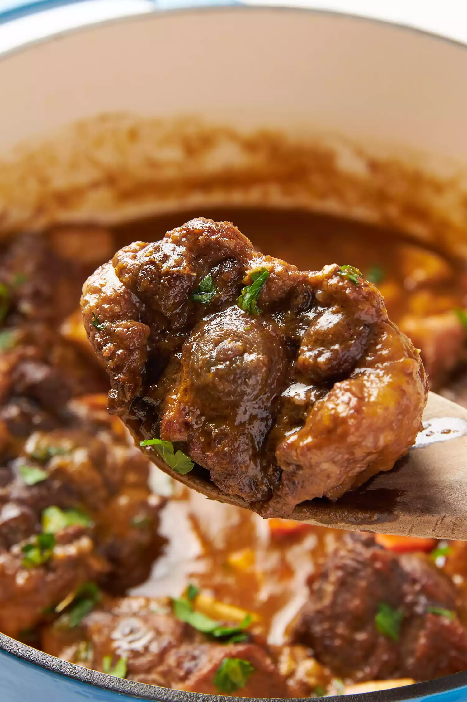

Oxtail Stew

Oxtail Stew Recipe
Oxtail stew features tender meat braised in a rich and flavorly gravy.
Ingredients
- 3 pounds oxtails with seperated joints.
- Kosher salt and freshly ground black pepper.
- 1 tablespoon extra virgin oil, plus more for raosting the vegetables.
- 1 medium yellow onion, chopped.
- 1 large carrot, chopped.
- 1 celery rib, chopped.
- 3 whole cloves garlic, peel still on.
- 1 bay leaf.
- Pinch thyme.
- Parsley.
- stock.
- 2 glasses of wine.
Steps
- Brown the oxtails
- Saute the onions, carrots, and celery
- Add the oxtails,garlic,bay leaf, thyme,salt,thyme,wine, then simmer
- Preheat the oven
- Roast the root vegetables
- Skim the fat
- Strain the solids from the cooking liquid and reduce
- Add back the oxtails and roasted vegetables